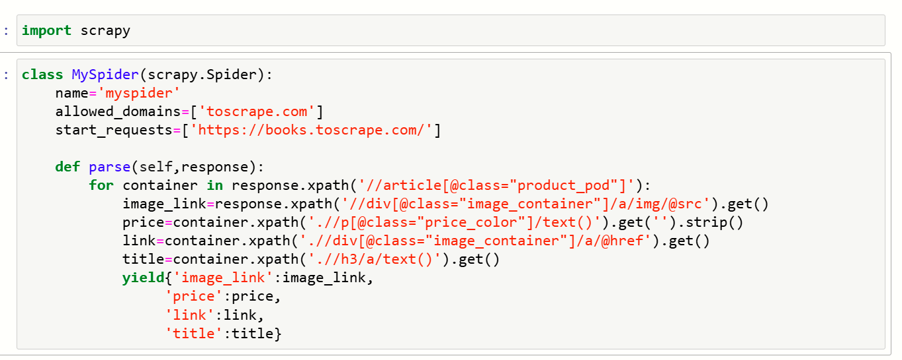
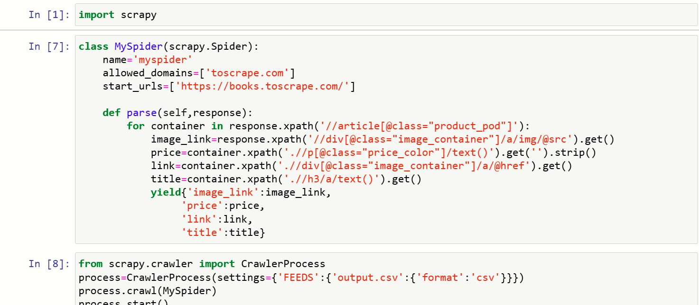
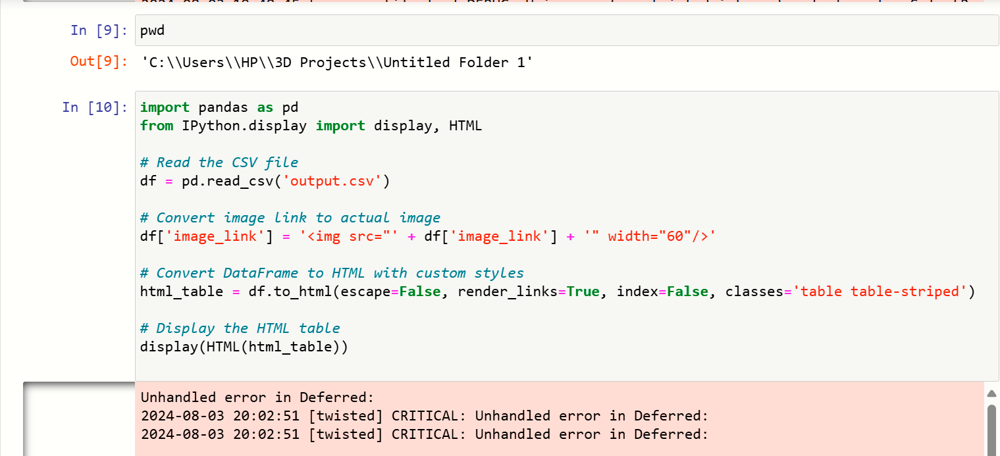

To automate the extraction of product data (such as book details and prices) from an online bookstore and present the data in a structured format for analysis and reporting purposes.
Python- language used
Scrapy- for web scraping
Pandas- for data manipulation
IPython for displaying HTML tables
XPath- for extracting data from HTML
CSV- for data storage
Automated Web Scraping: Extracted book information (image, price, link, and title) from the website using Scrapy.
Data Export: Saved the extracted data in a CSV file for further analysis.
Data Processing: Loaded the CSV data into a Pandas DataFrame to modify and format it.
HTML Visualization: Converted the DataFrame into an HTML table, including embedded images, to present the data in a visually appealing format.
Web Scraping is the automated process of extracting data from websites. It involves using software or scripts to collect structured information (such as text, images, or links) from web pages for various purposes like data analysis, research, or automation. Scrapy is an open-source web scraping framework in Python used to extract data from websites, process it, and store it in various formats like CSV, JSON, or databases. It provides tools for handling requests, parsing web pages, following links, and managing scraped data efficiently. MySpider is a user-defined spider in the Scrapy framework that inherits from the scrapy.Spider class. It contains the logic for crawling web pages, starting from specified URLs, and extracting data based on custom rules. The spider uses methods like parse to process responses from web pages and extract or follow additional links for further scraping. In this project, Scrapy, a Python framework for extracting data from websites, is used to scrape information from an online bookstore (books.toscrape.com). Spider Setup: A class MySpider is defined, inheriting from scrapy.Spider. The spider begins crawling from the website’s homepage (https://books.toscrape.com/) and is restricted to the domain toscrape.com. Data Extraction: The parse method is responsible for iterating through each product container (article[@class="product_pod"]) on the page. It extracts key details such as the image link, price, product link, and title of the book using XPath queries. The extracted data is returned as a dictionary for each item. Exporting Data: The scraped data, including image links, prices, titles, and product links, is stored in a CSV file (output.csv) as specified by the CrawlerProcess. Outcome: This project automates the collection of product data, which can be utilized for price tracking, product comparison, or analytics purposes. Pandas and DataFrame Manipulation After the web scraping process, the extracted data from output.csv is loaded into a Pandas DataFrame for further analysis. Data Loading: The CSV file containing the scraped data is read into a Pandas DataFrame. Modifying the Image Column: The image_link column is modified to convert each URL into an HTML image tag, allowing the images to be displayed directly in a web format. HTML Table: The DataFrame is transformed into an HTML table with custom styles, including striped rows and rendered links for enhanced presentation. The IPython display function is used to render the HTML output within a notebook environment. Outcome: This code transforms and visualizes the scraped data in a well-structured, HTML-formatted table, which could be embedded in reports or websites.
The project successfully automated the process of gathering and visualizing product data, reducing the manual effort required for data collection. The final output was a well-formatted HTML table that could be embedded into reports or used for market analysis, enhancing efficiency in product comparison and price monitoring.